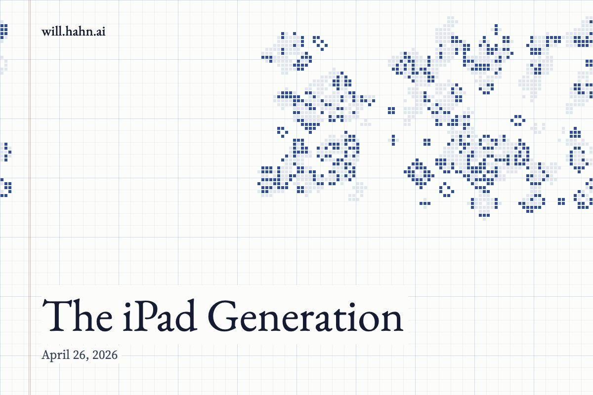

The iPad Generation
The Toy That Was Mistaken for a School

There is now a sentence floating around education circles that would have sounded paranoid fifteen years ago and banal today: the tablet experiment failed.
Not merely disappointed. Failed.
We handed children the most powerful attention-extraction machines ever built, placed them on desks, wrapped them in institutional language, and called the result modernization. We told ourselves that education had entered the future. The children understood something simpler. They had been given toys.
This is the first fact adults keep trying to evade. To a child, an iPad is not primarily a “learning device.” It is not a “digital workbook.” It is not “a portal to knowledge.” It is the thing they ask for on birthdays. It is the glowing rectangle of games, cartoons, rewards, frictionless novelty, and private escape.
A pencil is boring. A book is bounded. A worksheet is inert. But a tablet is alive. It flickers with possibility. It whispers that something better than the lesson is always one swipe away.
Adults pretend this distinction is semantic. Children experience it as physics.
The device does not sit on the desk like a tool. It vibrates in the imagination like contraband.
The Wrong Diagnosis
The emerging consensus is that technology damaged learning. That is true, but too crude.
Technology did not fail education because screens are inherently evil. That argument is lazy nostalgia dressed up as moral seriousness. Computers have transformed nearly every serious human enterprise: engineering, medicine, science, logistics, finance, design, music, language, and war. The idea that computation has nothing to offer education is absurd.
The deeper problem is that schools did not introduce computation.
They introduced consumption.
They did not teach children how computers work. They gave children apps. They did not teach systems, logic, memory, architecture, networks, protocols, algorithms, or code. They gave them interfaces. They did not hand students a machine and say, “This is one of the great artifacts of human civilization. Let us open it.” They handed them a sealed black mirror and said, “Tap here.”
And then everyone acted surprised when the children tapped somewhere else.
The disaster was not that technology entered the classroom. The disaster was that it entered as television pretending to be literacy.
The Device Was Smarter Than the Room
Older generations did encounter computers in school, but the relationship was different. A school computer in the 1980s or 1990s was not an infinite entertainment slab. It was often clumsy, limited, slow, and specific. You had to meet it halfway. You typed commands. You saved files. You navigated directories. You waited. You broke things. You learned, however dimly, that there was machinery beneath the surface.
Those machines had friction, and friction is pedagogically precious.
The tablet removed the friction. It made the machine smooth, sealed, seductive, and opaque. It turned computing from an encounter into an ambience. The child no longer had to understand anything to operate it. The interface became so intuitive that it bypassed instruction entirely.
That sounds like progress until you realize what was lost.
A child who can operate an iPad is not necessarily technologically literate. A raccoon can operate a trash can. The question is not whether the child can trigger the mechanism. The question is whether the child understands the mechanism.
Most do not.
Worse, most adults teaching them do not either.
The Unspoken Humiliation of the Teacher
This is the part almost nobody wants to say clearly.
The introduction of tablets into classrooms quietly humiliated teachers.
Not because teachers are stupid. They are not. Not because they are lazy. Most are overburdened, underpaid, and constantly asked to absorb every cultural failure downstream of the family, the economy, and the state. But they were placed in an impossible position.
They were told to teach through machines they had not been taught to understand.
A teacher can explain a book. A teacher can explain a sentence. A teacher can explain long division, a map, a microscope, a historical source, a lab procedure, a poem. But the tablet arrived as a sealed object from another civilization. The teacher could manage it, perhaps. Assign from it. Troubleshoot it badly. Restart it. Submit a ticket. Follow the training module.
But explain it?
Explain the chain from transistor to logic gate, from logic gate to processor, from processor to operating system, from operating system to app, from app to network request, from network request to server farm, from server farm to recommendation engine, from recommendation engine to the child’s attention?
Almost no one could.
So the teacher became the adult in the room holding ceremonial authority over a machine whose actual logic belonged to someone else.
The children noticed.
They always notice.
Children Can Smell Fake Authority
A child may not know the word “epistemology,” but a child is an expert in authority. Children constantly measure the competence of adults. They watch hands, eyes, hesitation, tone. They know when an adult is bluffing. They know when the teacher is one step ahead, and they know when the teacher is reading the same instructions the students are.
With tablets, the students often became more fluent at the surface than the adults. They knew how to switch apps faster. Find loopholes faster. Hide windows faster. Search for games faster. Bypass restrictions faster. They did not understand the machine deeply, but they understood its playground layer better than the people supervising them.
This created a strange inversion.
The teacher had institutional authority. The child had interface authority.
That is a dangerous split. It teaches the child, unconsciously, that school is not where technological mastery lives. School is where technology is awkwardly administered by adults who do not quite understand it.
Imagine a tone-deaf person trying to teach piano because they know where middle C is. The child may not yet be a musician, but they can hear the fraudulence in the room.
That is what happened.
The Publisher Captured the Machine
When teachers cannot command the machine, someone else will.
Into that vacuum came publishers, software companies, platform vendors, device manufacturers, and “edtech” consultants with dashboards and licensing agreements. The school did not own the pedagogy anymore. It rented it.
This is one of the great quiet scandals of modern education: what was sold as technological empowerment often became curricular outsourcing.
A genuine computer education would ask: What is a computer? What is information? What is a program? What is memory? What is a model? What is a system? What happens when a human instruction becomes machine behavior?
Instead, students got software ecosystems disguised as literacy. Learn this app. Submit through this portal. Click this module. Watch this embedded video. Complete this gamified quiz. Drag the answer into the box. Earn the badge.
This was not education in technology.
It was obedience training inside someone else’s product.
The child was not taught to become a builder. The child was trained to become a user.
The Toy-Television Hybrid
The iPad in the classroom suffered from a fatal dual identity.
As a toy, it promised play.
As television, it promised passive stimulation.
As a school device, it demanded discipline.
That is too much symbolic contradiction for a young brain. Adults can maintain separate contexts around the same object. A laptop can be for work at 2 p.m., Netflix at 9 p.m., bills on Sunday, writing on Monday. Adults barely manage this. Children cannot be expected to do it at scale inside a classroom filled with other children, weak supervision, inconsistent rules, and a device engineered by some of the most talented behavioral designers on Earth.
The child is told: use the magic toy for math.
This is like placing a slot machine on a monastery desk and asking for silent contemplation.
The problem is not that children are uniquely weak. The problem is that the device is uniquely strong.
It carries an entire amusement park under the glass.
What We Should Have Done
There was another path.
Schools could have treated computation as a foundational literacy, not as a delivery mechanism for worksheets.
Students could have learned keyboards before touchscreens. Files before feeds. Local storage before cloud abstraction. Drawing programs before social platforms. Command lines before app stores. Simple circuits before “digital citizenship.” Programming before productivity software. Networks before YouTube.
They could have taken machines apart.
They could have built crude games instead of sneaking polished ones.
They could have learned why a pixel lights up, why a button works, why a computer waits for input, why a loop can run forever, why memory is limited, why systems fail, why automation is powerful, why abstraction is dangerous, why the interface is never the thing itself.
That would have been a revolution.
Instead, we gave them glass.
The Great Misread
The adults thought the children were “digital natives.”
This phrase may be one of the most damaging educational myths of the last thirty years. It confused familiarity with fluency. It assumed that because children were surrounded by technology, they understood technology.
But living in a forest does not make you a botanist. Living under capitalism does not make you an economist. Living in a body does not make you a surgeon.
Children are not digital natives. They are digital captives.
They were born into systems designed to harvest attention before they had the language to describe attention. They learned gestures before concepts. They learned feeds before files. They learned reaction before reflection. They learned that knowledge arrives as a stream, not as a structure.
And then school, instead of rescuing them from this condition, ratified it.
The Cognitive Bill Comes Due
Now the bill is arriving.
Attention is weaker. Reading stamina is lower. Writing is thinner. Memory is outsourced. Patience is rarer. The ability to sit with a difficult problem without immediate reward has been eroded. Students often arrive at adolescence having spent thousands of hours interacting with devices that adapt to them, reward them, flatter them, distract them, and never demand that they become stronger.
Then they encounter reality.
Reality does not care about engagement. Algebra does not become easier because you are bored. A novel does not shorten itself because your dopamine has collapsed. History does not reorganize itself into clips. The laws of physics do not offer badges.
The mind grows by resistance. It needs weight. It needs silence. It needs sequence. It needs the slow violence of difficulty.
The tablet often removed that difficulty and replaced it with motion.
Motion is not growth.
The Machine Is Still Waiting
And yet the answer is not to smash the machines.
That would be another failure of imagination.
The computer remains one of the most extraordinary educational instruments ever created. Properly understood, it is not a toy, not a television, not a workbook, not a babysitter, and not a portal for publisher-approved content. It is a thinking machine. More precisely, it is a machine for making thinking visible.
A computer can show a child recursion, simulation, probability, language, geometry, music, logic, feedback, emergence, and error. It can turn mathematics into motion. It can make invisible systems manipulable. It can allow a child to build a world, break it, inspect it, and build again.
But this requires a different posture.
Not “Here is your device.”
Not “Complete the module.”
Not “Watch the video.”
Rather: “This is a machine made of human thought. You are going to learn how thought becomes structure.”
That is the threshold.
The Classroom After the iPad
The next school cannot be anti-technology. That would be like becoming anti-electricity after a bad lamp.
But it must become anti-opacity.
No sealed magic. No black boxes worshiped from the outside. No classrooms where the child understands the surface better than the teacher understands the system. No more software-branded pseudo-literacy. No more confusing access with education.
The child should not merely use the machine.
The child should see through it.
The real educational divide of the future will not be between children who have screens and children who do not. It will be between children trained to consume interfaces and children trained to command systems.
One group will swipe.
The other will build.
The Generation We Still Owe
The iPad generation was not ruined by technology. It was betrayed by a culture that gave them powerful machines without a philosophy of power.
We mistook distribution for instruction. We mistook engagement for learning. We mistook fluency with touchscreens for understanding. We placed glowing toys in front of children, failed to explain the civilization inside them, and then blamed the children for being distracted.
But the story is not over.
The same machines that flattened attention can deepen intelligence. The same screens that became cages can become windows into code, matter, language, and mind. The same children trained to tap can still learn to build. But only if adults recover the courage to stand before the machine without pretending, open the box, and say the first honest sentence:
We have been using this badly.
Now let us learn what it is.
New essays also go out by email. Subscribe on Substack.